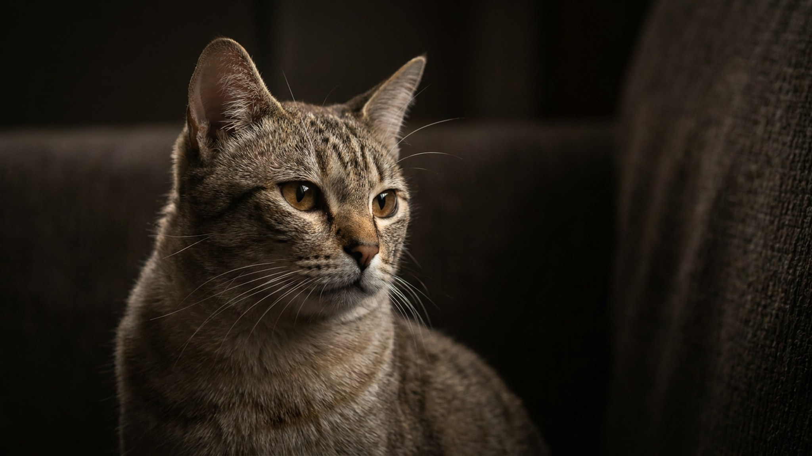

Большинство кошачьих пород появились случайно — мутация или естественный отбор. Австралийскую дымчатую вывели намеренно под конкретную задачу: кошка для городской квартиры, которая не требует выгула и не страдает от четырёх стен. Получилось: Australian Mist спокойна, ласкова, не разносит дом в одиночестве и не мечтает о побеге. Ниже — как устроен её характер, что нужно для ухода и с кем она уживается без конфликтов.
🐾 У вас австралийская дымчатая?
AnimaLife соберёт уход под породу: к каким болезням есть склонность, что проверять по возрасту, чем кормить и когда пора к врачу. Бесплатно, прямо в мессенджере.
Собрать план ухода → Собрать в MAX →
У вас iPhone? AnimaLife есть в App Store
Australian Mist появилась в Австралии в 1977 году — её целенаправленно создала доктор Трула Стрит, скрестив абиссинскую, бирманскую и домашнюю короткошёрстную кошек. Цель была чёткой: получить животное, которое комфортно живёт в закрытом помещении, не скучает и не агрессивно. В 1986 году породу признали официально. Сегодня Australian Mist распространена по всему миру, хотя в России пока редка.
Главная особенность окраса — дымчатый фон с пятнами или мраморным рисунком, от которого и произошло название. Шерсть короткая, без подшёрстка, плотно прилегает к телу.
Австралийская дымчатая — кошка компанейская, но не требовательная. Она охотно идёт на руки, любит лежать рядом с хозяином и активно участвует в домашней жизни, однако не орёт, если её не трогать несколько часов. Это спокойный, уравновешенный характер без крайностей: не дикая и не прилипчивая.
Короткая шерсть без подшёрстка — одно из главных преимуществ породы для городских условий. Она почти не линяет, не образует колтунов и не требует профессиональной стрижки. Достаточно расчёсывать кошку раз в неделю и протирать шерсть влажной рукой после расчёсывания.
Australian Mist — кошка средней активности. Она охотно играет, но не требует изматывающих сессий дважды в день. Достаточно 15–20 минут активной игры вечером: удочка, мячики, туннели. Порода хорошо поддаётся обучению: австралийская дымчатая учится приходить на зов, приносить мелкие предметы и осваивает несложные команды. Это полезно не только для развлечения, но и для ментальной нагрузки в закрытом пространстве.
Кошка не рвётся на улицу — это заложено в породе намеренно. Она не тоскует без выгула и не ищет балконные лазейки. Если вы хотите давать ей прогулки, используйте шлейку и приучайте постепенно — в безопасном месте без стрессов.
🐾 Ваш питомец — австралийская дымчатая?
Заведите профиль в AnimaLife: приложение запомнит породу, возраст и вес и будет подсказывать по уходу именно для неё. Вопросы AI-ветеринару — круглосуточно и бесплатно.
Завести профиль → Завести в MAX →
У вас iPhone? AnimaLife есть в App Store
🐾 Понравился разбор?
Подпишитесь на канал — каждый день разбираем по одному тревожному симптому у кошек и собак: что в пределах нормы, а когда пора к врачу. Подпишитесь, чтобы не пропустить разбор, который может спасти здоровье вашего питомца.
Материал носит информационный характер и не заменяет очную консультацию ветеринара.